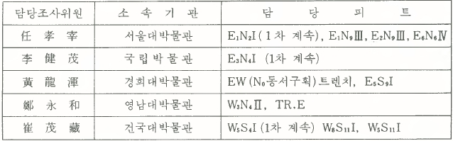

전곡리(1983)
돌아가기第 1 次 發掘은 1979년 3월 26일부터 4월 13일까지 19일 동안 第 2 地區에 해당하는 全谷里 583番地 人蔘밭이 있는 稜線 一帶에서 實施되었다. 앞에서 언급한 바대로 구성된 全谷里 發掘團은 1979년 3월 26일 현장에서 開土祭를 가진 후 第 2 地區의 中心地域인 人蔘밭이 있는 稜線 一帶를 基準點을 中心으로 四方 10×10m의 方眼(Grid)을 區劃하기로 하였다.
方眼의 區劃은 第 2 地區의 地形이 거의 南北方向인 點을 고려하여 西便 稜線에 있는 既往의 測量基準點을 D.A(測量基準點 A)로 定하고 正東方向으로 地形의 中間地點에 基點 B(D. B)를 設置하였다. D.B點은 人蔘밭이 있는 主稜線의 西向斜面이 西側稜線 사이에 있는 편평한 밭과 접하는 地點으로 거의 發掘對象 地域의 中心에 位置하고 있다. 이 D.B點을 基點으로 하여 正東西南北 方向으로 10m 간격의 無限直線을 區劃하였다. D.B點을 基點으로 하는 正南北線이 X軸, 正東西線이 Y軸인 四分平面이 區劃된 셈이다. 이 四分面의 番號는 基點(D. B)을 지나는 선을 各 方向의 0번으로 하여 원점에서 各 10m 간격으로 0,1,2,3,4,…순으로 定하였다. 또한 4個 方位의 番號로 東西南北 대신 EWSN으로 表記하기로 하였다. 그래서 基點(D.B)을 東西로 지나는 선은 N0와 S0로 명명되는 것이며 N0선에서 북쪽으로 10m 평행하는 선이 N1선이 된다. 따라서 各 方向으로 10m 간격으로 E0에서 시작하여 E1, E2, E3……, W0에서 W1, W2……, N0, N1, N2……, S0, S1, S2,…… 等의 線이 10×10m의 方眼을 區劃하게된다. 이 各 方眼의 番號는 各 方眼의 네귀퉁이 중에서 원점에 가장 가까운 곳을 교차하는 線의 명칭을 따서 붙이기로 하였다. 결국 E1S1, W1N1等의 方眼 名稱을 붙이게 되었다.
第 1 次 發掘에서는 5개 팀이 南北으로 10m의 간격을 두고서 東西方向으로 發掘해 나가기로 하였는데 國立博物館팀이 N4에 해당되는 東西區劃을 담당하고 서울大學校博物館이 N2, 경희大學校博物館이 N0, 嶺南大學校博物館이 S1, 建國大學校博物館이 S3를 담당하기로 하였다. 發掘豫定期間이 짧은 등의 制限된 狀況과 發掘의 1次的인 目標인 地表採集된 舊石器의 存在 層位確認이라는 點에서 各 팀이 우선적으로 發掘하여야 할 피트를 定하였다. 發掘地域의 地形이 거의 南北方向으로 되어 있어서 東西의 地形断面과 南北方向의 地形層位變化를 同時에 把握할 수 있는 피트의 分布가 必要한 바 設定된 方眼에서 대각선으로 發掘區域을 배치하였다. 결국 가장 북쪽의 國立博物館이 E3N4피트(圖版2-①)，서울大學校博物館이 E1N2피트,慶熙大 學校博物館이 W0S0, 嶺南大學校博物館이 W1S1, 그리고 建國大學校博物館이 W4S3피트를 우선적으로 各各 發掘을 하게 되었다. 그런데 第 1 次 發掘에서 10×10m의 方眼의 全面發掘이 어렵기 때문에 이 方眼을 5×5m의 方眼小區로 4等分하여 원점(D.B)에 가까운 方眼小區부터 Ⅰ,Ⅱ,Ⅲ,Ⅳ로서 시계바늘 방향으로 명명하여 이중 各己 第I小區부터 發掘하기로하였다.
결국 第 1 次 發掘에서는 E3N4Ⅰ, E1N2Ⅰ, W0S0Ⅰ, W2S1Ⅰ, W4S3Ⅰ 피트가 發掘되었는데 鄭永和가 담당한 W2S1Ⅰ 피트를 제외하고는 時間과 人力 等의 問題로 모두 發掘을 未完인 狀態에서 10月에 있을 豫定인 第 2 次 發掘로 미루게 되었다. 5개의 피트中 黃龍渾이 담당한 W0S1Ⅰ피트는 表土除去後에 發掘을 進行할 수 없을 程度로 피트 바닥에 물이 괴어 發掘을 中断하고 稜線上에 있는 E3N0Ⅰ피트를 發掘하기 始作하였으나 表土除去에 그쳤다.
發掘이 進行되는 동안 粘土層 發掘에 時間이 너무 所要되어 第 1 次 發掘의 基本目標인 發 掘地形의 構造把握에도 未盡할 것으로 생각되어 E1N2Ⅰ피트에서 東西線上으로 부분적으로나마 東西断面層位를 確認하기 위하여 2×2m의 작은 試掘坑 2개를 發掘하였다. 이 2개의 小 試掘坑은 W1N2Ⅰ와 W3N3Ⅰ 方眼小區에 넣었는데 W1N2Ⅰ피트에 넣은 것은 地表下 약 1.5m까지 계속해서 부식토층으로 되어 있었으며 물이 심하게 스며나와 작업이 不可能하여 中断하였다. 그리고 이보다 西便에 位置한 W3N3Ⅰ피트에 넣은 것은 地表下 50~60㎝ 程度에서 直徑 20~30㎝程度의 大形 塊狀川石이 쌓여져 있는 狀態로 露出되기 始作하였는데 이 塊石 사이에서 三國土器片이 採集되었다. 遺蹟 주변에는 江岸을 향하여 土築이 돌아가고 있는데 이 地域의 古地名이 「城內」이고 三國時代에 해당되는 城址遺蹟이 멀지 않은 곳에 있는 점으로 보아 三國時 土城의 下部築石이 나타난 것으로 보이며 장차의 調査를 생각하여 일단 보류하였다.
第 1 次 發掘期間 동안 서울大學校博物館 招請으로 日本 東北大學 芹澤長介교수와 東京大學의 渡邊直經교수가 發掘現場을 參觀하였으며 또한 4월 3일에는 國立中央博物館에서 '日本의 舊石器文化'(芹澤長介교수), '考古學에 있어서 年代決定法'(渡邊直經교수)이라는 題目의 講演會를 가졌다.
第 1 次 發掘期間 中 당시 朴正熙大統領이 遺蹟에 直接的인 關心을 表明하여 당시의 金桂元 비서실장이 現場을 來訪하였고, 發掘團이 持續的으로 發掘할 수 있고 유적 保存上 必要한 發 掘團 現場事務室 建立費로 5백만원을 경기도를 통하여 下賜하여 26坪 規模의 현재의 發掘團 사무실이 建立되었다. 그리고 당시 金聖鎭 文公部長官의 보조금도 發掘에 큰 도움이 되었다.
第 2 次 發掘은 1979年 서울大學校博物館이 文化財研究所로부터 學術用役으로 보조받아 동년 9월17일부터 11월30일까지 약 3개월간 實施되었다.
發掘期間中 金元龍團長이 渡美하게 되어 金正基 文化財研究所長이 發掘責任을 맡게 되었다. 그리고 發掘中 姜仁求 調査委員이 嶺南大學校 文化人類學科의 教授로 가게 됨에 따라 調査團 構成에 變化가 있었고 그 밖에는 第 1 次 發掘과 마찬가지였다.
第 2 次 發掘에서는 1次發掘調査에서 岩盤層에 到達하지 못한 E1N2Ⅰ, E3N4Ⅰ, W4S3Ⅰ피트의 發掘을 계속하기로 하고 앞으로의 持續的인 年次發掘에 對備하여 현재까지 發見된 1~4 地區의 範圍와 層位 및 出土遺物의 性格을 把握하기 위한 基礎調査의 일환으로 第 2 次 發掘에서는 第 2 地區 全域에 대한 小規模 피트를 各 地域에 넣어서 層位確認을 하기로 하였다. 그리고 重要 地點에 N0線 즉 D.B點을 지나는 東西方向으로 긴 土層確認을 위한 트렌치를 넣기로 하였다. 이 트렌치는 2m 폭, 4.5m 길이로 하여 각 피트 사이에 50㎝의 벽을 남기면서 원점에서 東으로 E1에서 E10, 西쪽으로 W1에서 W9까지 총 19개의 피트를 구획 발굴하였다. 그리고 새로이 넣는 피트는 作業進行上 2×5m 크기로 구획하였다.
그리고 人蔘밭 稜線을 이루는 赤色粘土層과 西便의 砂質層의 關係를 밝히기 위하여 W3피트와 S1W2Ⅰ피트 사이에 小規模의 피트를 넣었는데 이 피트에서 砂質層이 黃褐色粘土層 속으로 끼어 들어가 있어서 注目되었다.
第 2 次 發掘에서 E1N2Ⅰ, E6N6Ⅳ, E3N4Ⅰ, EW트렌치, W3S4Ⅱ, TR.E, W5S4Ⅰ, W8S11Ⅰ, W5S11Ⅰ 피트는 모두 發掘을 完了하였고, E2N9Ⅲ피트는 表土만 除去 후 中断하였으며 E5S9Ⅰ피트는 핸드액스 1點을 包含한 遺物이 多量 出土되었으나 作業量 關係로 中断 하였다.
第 2 次 發掘에서 調査된 피트와 發掘責任者는 아래와 같다.
E1N2Ⅰ 피트는 1979년 봄에 있은 第 1 次 發掘과 가을 第 2 次 발굴에 걸쳐 발굴하였다. 이 피트는 金元龍發掘團長의 指揮下에 서울대학교박물관이 담당하였다.
피트는 人蔘밭이 있는 第 2 地區 주 능선의 西向斜面의 中間에 位置하고 있다.
表土除去에 앞서 表土가 제일 깊을 것으로 생각되는 西南 모서리에 1×1m의 피트를넣어 表土層의 狀況을 把握하였는데 60㎝程度의 깊이에서 黃褐色의 粘土層이 露出되기 始作 하였다. 그리고 피트 内에서 6・25당시의 것으로 推測되는 포탄片, 탄환 등이 나오고 磁器片이 出土되어 심히 교란되어 있음을 알 수 있었다. 그리고 또 다시 表土層이 가장 얇을 것으로 추측되는 東北모서리에 다시 1×1.5m 크기의 콘트롤 피트를 넣었다. 이 東北모서리의 콘트롤 피트에서는 表土下 約 20~30㎝ 内外에서 黃褐色粘土層이 露出되었다. 西南 모서리 쪽의 콘트롤 피트는 地表下 약 120㎝ 程度까지 下降하였으며 東北모서리의 콘트롤 피트는 계속 하강하여 이 피트에서 나타난 層位를 確認하고 E1N2Ⅰ피트의 全面을 下降 작업 하였다.
第 1 次 發掘期間 中 發掘日程이 촉박한 關係로 인하여 피트의 北쪽 2m幅으로 發掘범위를 축소시키고 東北모서리의 콘트롤 피트는 50㎝ 확장하여 1×2m가 되게 하였다. 피트의 나머지 部分은 地表下 60~80㎝ 정도되는 面에서 작업을 中断하기로 하였다.
79년 가을에 있은 第 2 次 發掘期間에도 北側의 2 m幅만 계속 發掘하여 完了하였다.
1차와 2차발굴을 통하여 도합 40점의 遺物이 대단히 散發的인 樣相으로 出土되었는데 第 2 次 發掘時에 赤色粘土層이 거의 끝날 단계에서 쵸퍼와 망치돌 등을 비롯한 수 점의 遺物이 거의 同一한 平面에서 出土되었을 뿐이다.
①表土層(10 YR 4/6)
現在 보리 등의 곡물류를 耕作하고 있으나 過去에는 樹林이 있었다고 한다. 밭을 만들기 위해 原表面을 깎아서 낮은 곳을 매립한 關係로 피트의 東側은 地表下 20㎝정도 내외이고, 西便에서는 地表下 60㎝ 내외로 깊어지고 있다. 포탄편, 탄환편 등이 出土되고 있는 것으로 보아 심히 교란된 層임을 알 수 있다.
②(黃褐色)粘土層 (5YR 5/6)
밭을 일구는 과정에서 약간 깎여 나갔을 것으로 판단된다. 表土와 접한 關係로 因하여 植物의 뿌리에 依해 土壤의 腐蝕이 進行되고 있고 여러 군데 白色 斑點으로 退色하고 있음을 볼 수 있다. 粘性은 대단히 약한 편이며 表土層과 마찬가지로 東에서 西쪽으로 깊어지고 있는데 10㎝에서 50㎝ 두께의 差異가 있다.
③赤色粘土層 (2.5YR 4/6)
1m에서 150㎝ 정도의 두터운 粘土層, 황갈색粘土層과 連結되는 部分은 보다 粘性이 적고 色調 또한 갈색調가 짙다. 그리고 層의 아랫부분에서는 玄武岩 부식의 樣相은 때로 검정 반점이 있는 노란色調가 더욱 진해지고 있다. 그러나 層內의 變化는 層의 堆積이나 形成원인에 의한 것이 아니고 層位內의 變化가 대단히 점진적으로 이루어진 것이기 때문에 區分이 容易하지 않다. 이것은 層이 形成된 以後의 A・B・E層 現狀으로 理解되어야 할 것으로 보인다. 이 層이 第 1 層과 접하는 部分에서는 수직선을 이루는 灰白色 線이 層의 下部로 내려가고 있는데 이것이 이 現狀을 잘 말해 주고 있다. 遺物의 出土도 散發的인 樣相을 보이고 있다. 그리고 玄武岩盤이 突出된 곳에서는 岩盤에 連結되고 있다.
④황색 粘土層 (10YR 6/8)
玄武岩塊가 混入되어 있으며 또한 玄武岩의 腐蝕残存物이라고 보이는 黒色斑點이 여러 군데 보인다. 그리고 작은 砂質의 玄武岩 알맹이가 많이 混入되어 있어서 玄武岩의 腐 蝕土로 보이며 發掘時 노출된 玄武岩盤의 사이에도 黃色과 灰色의 粘土가 끼어 있는 것으로 보아도 알 수 있다.
岩盤의 全面을 덮고 있는데 피트의 東側에서는 60㎝ 以上의 깊이를 가진 곳도 있으나 西側으로 가면서 얇아지는데 岩盤이 突出된 部分은 없는 곳도 있고 피트의 西側 150㎝幅 에서는 없다. 이 E1N2Ⅰ피트에서는 전혀 遺物의 出土가 없어서 玄武岩이 부식된 自然層으로 보여진다.
⑤岩盤
東側에서는 表土下 250㎝ 정도이고 西側의 낮은 곳에서는 190㎝ 정도이다. 第 3 層인 黃色粘土層으로 덮여 있으나 부분적으로 突出한 곳에서는 第 2 層인 赤色粘土와 連結되고있다. 形狀은 대단히 不規則한 突起와 함몰부들이 있어서 용암분출 後 원래의 樣相을 많이 가지고 있다고 보아진다.
第 1 次와 第 2 次 發掘을 通하여 도합 40點이 出土되었다.(表1)
大部分의 遺物은 散發的인 出土樣相을 보이고 있으나 第 2 層인 赤色粘土層 最下部에서 쵸퍼 1點 등 3點의 遺物이 同一한 平面을 이루고 出土되었다.
遺物중 특히 두께가 一定한(2~3㎝ 내외) 규암 川石으로 된 石材가 4點 있는데 모두 側面이 직각에 가까운 날을 가지고 있다. 이것은 모두 사용된 것으로 보이며 遺物의 形態上 特異한 것이다.
① 긁개 (Scraper：E1N2Ⅰ-33, 圖面 7 -②)
입자가 고운 白色硅岩製(Quartzite). 맥암결을 따라 잘려진 石材(Chunk)에 제작한 것으로 오목한 날(Concaved Edge)과 약간 볼록한 날 (Round Edge)을 가지고 있다. 오목한 날은 석기의 배면(Ventral Face)을 크게 한번 타격하여 만든 것으로 날은 40~50° 정도의 무딘 편임(Blunt). 석기의 끝부분은 兩面으로 加工하였다.(Bifacial Retouch)
② 박편 (Flake：E1N2Ⅰ-8, 圖面 7 -④)
약간 粒子가 거친편의 硅岩 (Quartzite)으로 側面打擊(Side Blow)에 의해 제작된 것이며 박리흔이 많은 打撃面(Striking Platfom)을 利用하였으며 박리角(Flake Angle)은 110°이다. 석기등면(Dorsal Face)에는 中心에 稜을 이루는 박편흔(Radial Flake Scar) 남아 있다.
타격점 폭은 1.2㎝, 두께는 0.8㎝이 며 전체적으로 파손흔은 없다.
③ 使用石材(Utilized Chink : E1N2Ⅰ- 2 ,圖面8 -②，圖版5 -①)
맥암결을 따라 두께가 一定하게 쪼개진 硅岩質川石. 측면에는 크기를 계속 줄였으며 直角에 가까운 모서리를 가지고 있는데 긁개용 날로 사용한 흔적이 있다. 同一한 종류 의 사용석재가 E1N2Ⅰ피트에서 2點 더 있다.
④ 긁개 (Scraper：E1N2Ⅰ- 7, 圖面 7 -①)
粒子가 대단히 거칠고 박리면이 매우 不規則한 石材로 母型把握不能(Undefinable Pri-mary form). 平面形態는 거의 方形을 이루고 있으며, 등부분은 自然面으로 이루어져있는데 숫기와 단면 형태와 같다. 한쪽 끝에 배부분 (Ventra Face)에서 加工하여 둥근 날(Concaved Edge)을 만들었는데, 대단히 急하다. (Step Edge) 길이 5.3㎝, 폭 5.8㎝,두께 3.2㎝.
⑤ 볼록날 긁개 (Scraper : E1N2Ⅰ- 27, 圖面 8 -①)
粒子가 치밀한 白色의 硅岩質川石自然面에서 타격하여 제작한 박편의 兩面에 볼록날,한 쪽은 대단히 예리한 날을 만들었다. 한 쪽은 외면으로 반대편은 양면으로 加工했고, 외면으로 가공한 날은 40~45°程度이며 兩面으로 加工한 날보다 둔하다.(Blunt) 길이 6.7㎝, 폭 6.9㎝, 두께 2.4㎝.
⑥ 쵸퍼 (Chopper：E1N2Ⅰ- 31, 圖面 8 - ③, 圖版 7 -①)
褐色硅岩質 系統의 긴 네모꼴 川石을 끊어서 만든 것. 石器의 뒷굽, 배면, 등면 등이 모두 自然面으로 이루어져 있다. 날은 배부분에서 크게 박리되어 直線으로 된 급한 날 (80°내외. Steep)을 가지고 있는데 側面에도 작은 타격흔이 남아 있다.
⑦ 쵸퍼 (Chopper : E1N2Ⅰ- 35, 圖面 7 -③)
둥글고 납작한 川石의 一部를 깨뜨려 내어 날로 쓴 것으로 石器의 뒤・배・등 부분은 모두 自然面으로 남아 있다. 날은 거의 직선에 가까우나 不規則하며, 날의 각도 역시 不 規則하다. 길이 7.7㎝, 폭 6.8㎝, 두께 4.1㎝.
E1N8Ⅲ 피트는 人蔘밭이 있는 稜線의 北端에 位置하고 있는데 發掘團 事務室의 北門 밖에 位置하고 있다. 79년도 가을(第 2 次 發掘)에 發掘된 것이며 원래 피트 自体가 試掘坑의 性格을 가진 것이어서 2×5m의 小規模피트를 東西方向으로 넣은 것이다. 이 피트는 第 2 地 區의 主稜線의 最北端의 層位內容을 把握하기 위한 것이었다.
①表土層
現在 耕作地이며 콩, 보리 等을 심는 밭이다. 稜線의 가장 높은 곳이어서 表土層은 20~40㎝ 정도로 두텁지 못하다.
②黃褐色粘土層 (7.5YR 4/6)
東西로 거의 水平을 이루면서 西쪽 끝부분부터는 西向으로 기울기 始作한다. 아주 단 단하고 고운 粘土質로 異物質이 전혀 없다. D.B地點 東쪽에 있는 다른 피트와 같이 表 土層에서부터 灰白色의 수직선이 많은데 이것은 地下水와 植物 뿌리 등의 有機物質이 溶解・沈下(Leaching) 하면서 土壤을 變化시킨것으로 보인다. 피트의 東西쪽에 치우쳐 30㎝ 폭과 55㎝길이의 범위내에 9개의 自然石群이 表土下 50㎝정도 되는 位置에서 發見되었는데 이것은 表土層下 30㎝ 되는 깊이로 層位의 變動은 전혀 찾아볼 수 없었으며 南쪽으로 連結될 可能性이 있으나 다음 發掘調査時로 미루기로 하였다.
③赤色粘土層 (5YR 4/6)
第 1 層인 黃褐色粘土層보다는 水分이 많아 덜 단단한 편이나 역시 곱고 不純物이 거의 없는 粘性이 강한 土壤이다. 上層部에서는 第 1 層에서 보이는 灰色白의 退色現象이 약간 보이고 全体的인 色調가 갈색 기운이 있다. 下層部로 갈수록 짙은 赤色調를 띠고 있으며 이 層位內에서도 塊狀의 黃褐色粘土가 斑點形態로 나와 있는데 層位로 連結될 정도는아니다. 層位는 西쪽의 얇은 곳에서는 120㎝ 내외이고 東쪽에서는 170c㎝정도의 두께를 가지고 있다. 遺物의 出土狀況을 본다면 全体的으로는 散發的인 樣相이지만 表土下 130~145㎝ 內外의 地點에서 몸통이 아주 두터운 Biface와 함께 15點의 遺物이 出土되는 面이 있었으며 地表下 200~215㎝내외에서 16點의 遺物이 出土되었는데 이것은 이 피트의 層位가 거의 水平을 이루고 있는 點을 생각한다면 同一面으로 간주해도 무방하다. 그런데 出土遺物中 장석질이 붙어 있는 1개의 白色硅質岩 石材로 製作된 3점의 石器가 出土되었 는데 各 石器는 약 80㎝ 정도의 깊이 差異를 두고 出土되어 이 피트의 赤色粘土層內에서도 層位形成時 교란의 可能性을 보여주고 있다. 그러나 石器들이 전혀 마모되지 않은 점은 이 장소에서 石器의 製作・使用이 이루어졌음을 보여주는 것으로 土壤과 함께 石器가 다른 地域으로부터 이동되었을 가능성은 없는 것으로 보여진다.
④黃色粘土層(10YR 6/8)
피트의 중앙부가 가장 얇아서 35㎝내외이고 西쪽은 거의 1m에 육박한다. 塊狀의 玄武岩이 腐蝕된 것이 보이고 있으며 砂質의 玄武岩 粒子가 混入되어 있다. 이러한 것은 이 層이 현무암의 부식으로 이루어진 粘土層内에 있는 것이므로 砂質이나 礫과 混同을 막기위해 황색점토층으로만 表現한 것이다.
⑤岩盤
黃色粘土層과 바로 連結되어 있고 피트의 中央에서 南便과 西便으로 傾斜지고 있다.表面은 熔岩분출의 상태인듯 대단히 不規則한 樣相을 보여준다.
遺物은 총 60點이 採集되었는데 51점이 赤色粘土層에서 出土되었다. 出土되는 樣相은 赤色粘土層位項에서 言及한 바, 位置上으로 볼 때는 2개의 面을 假定할 수는 있으나 遺物의 교란가능성이 있고 그 교란의 양상 파악이 不可能하기 때문에 文化面으로 볼 수는 없을 것으로 생각된다.
①긁개 (Scraper-end：E1N9Ⅲ- 1, 圖面 10 -①)
갈색규암제(Quartzite). 배부분(Ventral face)이 全面 맥암결로 이루어져 있어서 原石에서 쪼개진 돌(Splited cobble)을 母型으로 製作한 것이다. 등면은 全面 自然面이며 兩端(Both end)에 외면으로(Unifacial) 加工하였는데 모두 각 50~60°와 70~80°정도의 직선 날(Blunt, Straight edge)을 가지고 있다.
크기 : 길이 7.5㎝, 폭 5.5㎝, 두께 3.0㎝
②긁개 (Scraper：E1N9Ⅲ-48, 圖面 11-①)
아주 고운 粒子의 硅質岩으로 만든 것인데 母岩에서 長石質이 있었던 곳은 모두 腐蝕이 되어 있다. 맥암의 결을 따라 쪼개진 母型(Primary form, Chunk)의 끝부분을 加工하여 날을 形成하였다. 兩側面이 平行인 四角形에 가까운 平面인데 兩側面도 加工없이 긁개용 날로 利用하였다. 끝부분 가까운 곳에 加工된 날은 一種의 자르는 用途로 쓰였을 可能性이 있다. 加工한 部分의 날은 70~80°로 급하다.(Blunt) 側面에는 작은 톱날을 가지고 있다.
크기 : 길이 6.5㎝, 폭 4.9㎝, 두께 2.5㎝
③긁개 (Scraper：E1N9Ⅲ-31, 圖面 12-②)
약간 억센 편의 硅岩質 박편에 製作한 것인데 平面 三角形이며 등면의 박편흔도 石器의 方向과 平行되고 있다. 등면 (Dorsal face)의 일부에는 自然面(Cortex)이 남아있으며 배면(Ventral face)에 1~2 回의 打擊을 가하여 날을 세우고 있다. 등면의 박편흔은 石質이 고르지 못하여 不規則한 박리흔을 보이고 있다. 石器의 끝에도 약간의 加工이 있은 듯 하나 形을 變形시키는 정도에는 未達.
길이 7.9㎝, 폭 5.7㎝, 두께 2.2㎝
④긁개 (Scraper：E1N9Ⅲ-53, 圖面 11-③)
고운 粒子의 硅岩製, 긴 박편 (Struck)에 製作한 것으로 등면은 全体的으로 中心稜에서 사방으로 박편흔이 있는데 (Radial Scar pattern in dorsal face) 石器의 끝부분에 둥글게(Round edge) 예리한 날(Shallow)을 다듬었다.
側面의 둥근날 역시 使用한 흔적이 있다. 全面은 박편흔이 뒤덮고 있고 뒷굽 부분은 打擊面으로 利用하였는데 타격흔이 많다(Multifacetted Striking Platform).
길이 7.7㎝, 폭 5.6㎝, 두께 2.9㎝
⑤양면날찍개 (Chopping tool : E1N9Ⅲ-13, 圖面 12-①)
硅質岩(Quartzite)제로 박리면이 대단히 不規則하다. 川石의 自然平面을 利用하여 打擊을 가하여 보다 납작한 形態로 加工한 後에 한쪽 끝을 兩面加工에 依해 둥그런 形態의 날을 만들었다(Bifacial edge). 石材가 거칠어서 날도 톱니처럼 不規則한 樣相을 보인다. 등부분엔 自然面이 약간 남아 있고 손잡는 부분도 외면으로 加工하여 잡기에 편하도록 하였다 (Unifacially trimmed in butt for gripping).
길이 7.0㎝, 폭 7.1㎝, 두께 3.0㎝.
⑥ 찍개 (Chopper： E1N9Ⅲ-52, 圖面 11-②)
약간 粒子가 거친 硅質岩製로 뒷굽부분에 남아 있는 맥암면에서 타격하여 떨어져 나온 것 이라 생각된다. 平面은 三角形을 이루고 있고 표면에는 최소한 2개 方向의 박리흔이 남아 있으며(Double Striking Platform) 側面도 역시 마찬가지 이다. 尖頭部를 예리하 게 하기 위하여 배부분(Ventral)에 加工하고 있다.
길이 8.7㎝, 폭 6.5㎝, 두께 3.8㎝
⑦ 긁개 (Scraper：E1N9Ⅲ- 38, 圖面 13-①)
고운 백색규질암(Quartzite)제. 맥암의 결을 따라 임의의 각으로 쪼개진 박편의 모서리 일부를 깨뜨려 오목날(Concaved edge) 을 만들었다. 날은 대단히 급한데 배부분을 타격 하여 만들었는데 거의 직각에 가깝다. 석재의 두께는 거의 一定하다. 손잡이 부분에 약간의 自然面이 殘存한다.
길이 8.0㎝, 폭 6.0㎝, 두께 1.8㎝.
⑧ 주먹도끼 (Proto-biface：E1N9Ⅲ, 圖面 10-②, 圖版 6 -②)
褐色硅岩製, 粒子가 거칠고 脈岩面이 나타난 곳이 있으나 比較的 박편흔과 石器의 形態가 잘 나타나 있다. 中心이 두터운 장타원형의 川石의 한 쪽 方向에서 원추형 박리흔을 보이도록 川石의 周圍를 晉아가면서 打擊하여 한쪽 면의 自然面을 完全히 除去하였다. 部分的으로 兩面을 加工하여 S字 휘임이 있는 날을 만들고 있다.
平面은 타원형을 이루고 있으나 몸통이 대단히 두터워서 최대 넓이와 최대 두께가 거의 1:1의 比를 가지는 정도이다. 全谷里에서 採集된 주먹도끼群에 보이는 4가지의 製作技法 中 타원형 주먹도끼를 제작하는 技法의 하나이다.(註 : 裴基同,1980)
원추形의 박리면이 남은 反對便은 많은 부분에 自然面이 남아 있는데 全谷里 出土 및 採集의 주먹도끼 중에는 가장 두터운 것이다.
길이 12.9㎝, 폭 9.1㎝, 두께 8.0㎝.
⑨긁개 3점 (Scrapers：E1N9Ⅲ - 8 , 40, 41, 圖面 13-②)
대단히 치밀한 粒子의 白色硅岩(Quartzite)으로 만든 것. 이 3점은 同一한 母岩에서 3개로 나누어져서 3개 석기가 組合 可能하다.(圖面은 조합된 그림) 石質에 장석질이 많이 포함되어 있어서 부식된 부분이 있다. 그리고 同一한 白色硅岩質이 E1N9Ⅲ피트내에서 多量 發見되었는데 이것은 모두 同一한 母岩에서 由來된 것으로 생각된다. (E1N9Ⅲ-38, 42, 45, 48) 이 3개의 石器는 일정한 박리양상을 보이지 않고 쪼개진 石材類로 판단된다. 모두 부분적인 加工을 하여 使用한 흔적이 있는데 E1N9Ⅲ - 8은 끝부분에 약간의 加工으로 오목날을 만들고 있고 E1N9Ⅲ-40은 石器의 끝에 크게 박편을 떼어낸 後 모서리에 약간의 작은 加工을 하여 자르는 날로 利用한 것으로 보인다. E1N9Ⅲ-41도 역시 끝 부분에 작은 加工으로 볼록날의 긁개로 만들었다. 그런데 이 3점의 石器에서 重要한 사실은 이 3점의 石器가 同一한 장소가 아니고 E1N9Ⅲ-8과 E1N9Ⅲ-40, 41과의 출토의 높이 差異가 80㎝나 된다는 點이다. 이것은 層位 부분에서 언급한대로 層位의 混乱可能性을 보여주는 것이며 이러한 層位內의 교란 상태는 赤色粘土層이 形成될 當時에 이루어진 것으로 判断되며 赤色粘土層內에 黃褐色 또는 黃赤色 等의 斑點이 있는 것은 이러한 狀態의 反映으로 생각된다.
크기 : E1N9Ⅲ- 8 길이 6.0㎝, 폭 4.0㎝, 두께 2.5㎝.
E1N9Ⅲ-40 길이 7.9㎝, 폭 5.4㎝, 두께 2.6㎝.
E1N9Ⅲ-41 길이 5.4㎝, 폭 6.5㎝, 두께 2.3㎝.
E6N6Ⅳ피트는 인삼밭이 있는 稜線에서 東側斜面 사시나무 밭에 稜線의 向方과 거의 直角되게 2×4.5m크기로 넣은 것이다. 이 피트는 第 2 次 發掘時 現在 集中 調査되고 있는 西側 斜面의 반대편 斜面의 層位를 確認하기 위해 넣은 것 이다. 그리고 이 피트의 위치부근에서도 多量의 遺物이 地表採集된 바 있다. 이곳은 사시나무를 심기 전에 整地作業을 하였기 때문에 表土가 상당량 除去되었다. 그리고 除土된 흙은 피트의 東側끝의 깊은 表土層 에는 깎여나간 흙이 쌓인 것이 보인다.
①表土層 (10YR 6/4)
사시나무의 뿌리가 번성해 있다. 긁개 1點 등의 遺物이 出土되었다.
② 暗黃褐色粘土層 (10YR 4/4)
表土와 접하는 부분은 상당히 깎여나가 평면을 이루고 있다. 대단히 고우며 發掘時에 호미가 휘일 정도로 단단하다. 部分的으로 黃灰色系統으로 변색된 곳도 있으며 3層과 接하는 面도 고르지 못하고 水分이 많을 때는 境界가 모호한 곳이 있을 정도로 區分이 어렵다. 散發的인 유물출토 양상을 보인다.
③ 赤色粘土層 (2.5YR 4/8)
90㎝에서 160㎝ 정도의 두께를 가졌는데 1層보다도 수분이 많고 灰黃色의 斑點이 군데군데 보이며 대단히 고운 粘土이다. 發掘 中 柱狀의 黒色粘土가 많이 露出되었다. 遺 物은 散發的으로 出土되고 있을 뿐이다.
④黃色粘土層(2.5YR 7/8)
피트의 東半部에서는 현무암반에 군데군데 끼어 있는 정도이나 아주 얇지만 西半部에 서는 15㎝ 두께까지 남아 있는 곳도 있다. 玄武岩이 부식된 것으로 보이는 黒色 斑點이 여러 곳에서 보이고 砂質狀의 玄武岩이 남아 있다. 岩盤은 表面이 대단히 不規則하다.
①긁개 (Scraper : E6N6Ⅳ - 1, 圖面 15-②)
고운 편에 속하는 백색硅質岩製 (Quartzite) 박편에 제작한 것으로 보이나 타격점이 제 거되어 확실히 파악할 수는 없다. 양쪽 側面을 加工하여 날을 만들고 있는데 石器의 평면 方向으로 볼 때 左側에 대단히 급한 둥근 날(Round Edge)을 만들고 있고, 右側에는 석기의 배부분으로 톱날을 만들었다(Notch). 등면(Dorsal Face)에는 中心稜이 있는 박편흔으로 덮혀 있다(Radial Sharp Dorsal Scar). 全面이 박편흔으로 덮혀 있고 断面이 거의 三角形을 이루고 있다. 石器 몸체에는 마모 흔적이 거의 없다. 길이 6.6㎝, 폭 5.3㎝, 두께 3.0㎝.
②긁개 (Scraper：E6N6Ⅳ - 4, 圖面 15-③)
白色의 石英岩 系統으로 제작하였는데, 박리면이 대단히 不規則하다. 石器의 뒷축 부분에 남아 있는 平面의 自然面을 打擊面으로 利用하여 떼어낸 大形 박편(Large Flake)을 兩側에 加工하여(Retouch Both Side) 製作하였다. 平面은 거의 四角形을 이루고 있고, 石器의 왼쪽은 대단히 날카로운 날(Shallow Edge)을 이루고 있고 반대편은 보다 무딘 날을 갖고 있다.(Blunt Edge) 左側에는 약간 尖頭形으로 되어 있고 반대편에는 거의 둥그스럼한 날을 이루고 있다. 길이 7.6㎝, 폭 7.3㎝, 두께 3.6㎝.
③ 긁개 (Scraper：E6N6Ⅳ -10, 圖面 15-①, 圖版 8 -④)
입자가 고른 갈색의 硅質岩(Quartzite Fine)으로 제작한 것. 小形의 클리버로 볼 수도 있는 가로직선날 긁개이다. 석기 등면의 직선날 부분에는 自然面이 남아 있으며, 平行의 박리흔을 보이고 있다. 가로직선날은 대단히 날카로우며(Shallow) 반대편의 끝에는 尖頭(Point)를 만들고 있다. 길이 7.4㎝, 폭 4.4㎝, 두께 1.4㎝.
④ 尖頭器(Point：E6N6Ⅳ -13,圖面 16-①)
白色石英岩 系統의 石材 (Quartz-Vein)로 유리質이 많은 石材. 石器의 뒷굽부분에 남아 있는 自然面을 打擊面으로 利用하여 떼어낸 박편에 제작한 것으로 石器의 全面을 兩面 加工하고 있다(Trimmed Bifacially). 尖頭는 섬세한 加工없이 側面에 2~3회의 打擊 을 加하여 만들었는데 尖頭 外에도 側面에 만든 둥근 날도 使用한 흔적이 있다. 兩側의 날은 대단히 급하다(Steep Edge). 길이 7.0㎝, 폭 5.2㎝, 두께 2.6㎝.
⑤ 긁개 (Scraper：E6N6Ⅳ - 12, 圖面 16-②)
硅岩 (Quartzite) 川石을 쪼개서 만들었다. 등부분은 거의 全面이 自然面의 상태로 남아 있고 배부분은 맥암의 결을 따라 쪼개져서 맥암결평면을 이루고 있다. 平面上의 돌출한 尖部를 중심으로 배면을 集中加工하여 직선날(Straight Edge)과 尖部(Pointed Edge)를 만들었다. 以外 石器의 끝부분과 뒷부분굽에 石器를 대강 다듬기 위한 타격흔이 남아 있다. 길이 7.9㎝, 폭 6.6㎝, 두께 3.4㎝.
⑥ 쵸퍼 (Chopper : E6N6Ⅳ - 15, 圖面 16-③)
硅岩質의 川石의 一端을 깨뜨려 만든 것인데 原石의 맥결을 따라 쪼갠 후 대단히 급한(Steep) 날을 自然面의 여러 방향으로 깨뜨려 제작하였다.
길이 8.2㎝, 폭 5.1㎝, 두께 4.0㎝.
⑦ 긁개 (Scraper : E6N6IV-19, 圖面 17-0)
粒子가 고르지 못한 褐色硅岩 (Coarse Quartzite) 박편에 제작. 平面이 마름모形으로 양면 加工하여 경사진 직선날(Inclined Straight Edge)을 양쪽으로 만들었는데 날카로운편이다(Shallow). 등부분 일부에는 自然面이 남아 있다. 길이 6.0㎝, 폭 5.0㎝, 두께 1.7㎝.
⑧ 뾰족끝찍개 (Pick：E6N6Ⅳ-20, 圖面 17-②, 圖版 6 -③)
대단히 不規則한 石英質岩(Coarse Quartz Vein)으로 만들었는데 몸통의 대부분이 석영질암이 갖고 있는 脈岩面으로 이루어져 있다. 不規則하게 쪼개진 原石(Chunk)갖고 있는 尖頭를 약간 加工하였고, 뒷부분에 (Butt) 손질을 가하였는데 부분적으로 약간 둥그스럼한 날을 갖고 있다. 단면은 三角形이며 끝은 鑄鍬와 같이 鋭利하다. 길이 14.3㎝, 폭 7.6㎝, 두께 5.8㎝.
⑨ 긁개 (Scraper : E6N6Ⅳ-30, 圖面 17-③)
粒子가 거칠고 不規則한 石英岩製. 不定形으로 쪼개진 石材의 側面을 떼어내어 加工하여(Trimmed in Ventral face) 가로 직선날을 使用하였다. 날은 급한 傾斜를 이루고 있고 使用痕이 많다. 길이 6.3㎝, 폭 4.5㎝, 두께 3.9㎝.
國立博物館팀 이 發掘을 담당한 E3N4Ⅰ 피트는 현재 발굴된 사무실 南쪽에 位置하는데 능선에서 약간 西向斜面에 位置하고 있다. 1次와 2次에 걸쳐 발굴하였는데 1次 發掘에서는 (5 × 5)㎡ 全面을 層位面을 따라 下降作業을 실시하였다. 1次 發掘期間中 第2層인赤色粘土層 內에서 柱狀의 黒色粘土가 나타났다.
1次 發掘時에 遺物이 어느 정도의 平面的인 양상을 띠고 出土되었으며, 출토유물량도 상당히 많다.
2次 發掘時에는 발굴의 편의를 爲하여 피트를 南北方向으로 1.5m幅으로 區劃하여 발굴하였다. 2次發掘의 最終단계에서 層位의 재확인을 위하여 東側으로 1m幅을 擴張하였다.그리고 赤色粘土層의 粘土層까지 발굴하고 난 후 最下 粘土層인 황색점토층은 부분적으로 시굴갱을 넣어 遺物이 出土되지 않는 層임을 확인하였다.
層位는 表土層下에
로 구성되어 있는데 各 層 부분적으로 부정교합의 面을 보이고 있으나 대체로 南北方向으로 水平-平行을 유지하고 있다. 表示된 1層에서 4層까지는 모두 赤色粘土列 粘土層 으로 보이며 5層(黃赤色粘土層) 부터는 작은 玄武岩 입자가 混入되어 있다. 그리고 黃色層 玄武岩 있는 粘土層이며 岩盤 玄武岩盤이다. 發掘 赤色粘土層까지 發掘 완료되었고 言及 대로 아래의 층은 試掘坑으로 확인하였다.
①긁개 (Scraper : E3N4Ⅰ -M18, 圖面 19-②)
고운 백색석영암(Quartz). 平面이 직각삼각형으로 생겼고 박편에 제작한 것 (End Str-uck Flake). 傾斜진 날(Inclined edge Plan)은 둔한 편이다(Blunted) .뒷굽부분은 自然面이 남아 있고 이 자연면을 利用하여 박편을 제작하였다.
길이 5.0㎝, 폭 4.3㎝, 두께 1.9㎝.
② 긁개 (Scraper：E3N4Ⅰ-KYJⅡ107, 圖面 19-③)
제 1 층 出土. 규암川石의 일부를 깨뜨려 만든 것인데 석기의 등면과 손잡는 뒷굽 부분은 自然面이 그대로 남아있다. 뒷굽부분의 自然面平面을 타격면으로 利用하여 연속적인 타격을 加하여 全体的인 成形을 하였고 다시 石器의 등면의 自然面을 타격면으로 이용하여 平面의 方向에 대하여 거의 直角에 가까운 날을 만들었다 小形이기는 하나 보다 둔한 作業에 사용된 듯하다.
길이 6.8㎝, 폭 6.4㎝, 두께 4.6㎝.
③ 찍개 (Chopper：E3N4Ⅰ-KYJ102, 圖面 19- ①, 圖版 6 -④)
제 2 층 출토.타원형이 川石의 양단을 깨뜨려 만든 것인데 한쪽은 尖頭部를 單面 加工(Unifacially Trimmed) 하였고 석기의 뒷굽부분은 尖頭날의 反對便의 方向으로 加工하였 는데 손잡기에 편하도록 加工한 듯하다. 나머지 부분은 自然面 그대로 남아있다.
길이 11.6㎝, 폭 8.2㎝, 두께 4.6㎝.
④ 긁개 (Scraper：E3N4Ⅰ -M56, 圖面 20-①)
고운 규암(Quartzite)으로 만든 것인데 不定形石材 (Chunk)에 제작하였다. 길다란 長方形의 平面을 가진 것으로서 뒷굽에 약간의 加工을 加하였으며 石器의 끝에 한쪽 면으로 加工한(Unifacially Trimmed), 예리한(Shallow)날을 가지고 있다, 배부분이나 등부분이나 모두 맥암결이 그대로 남아있는 부분이 많다.
길이 6.5㎝, 폭 5.5㎝, 두께 2.2㎝.
⑤ 긁개 (Scraper : E3N4Ⅰ-M77, 圖面 20-②)
고운 석질의 규암제. 母型 (Primary Form)의 파악이 힘들고 석기의 등부분의 타격흔으로 보아 뒷굽(Butt)의 맥암면을 타격면으로 利用한 듯하다. 석기의 오른쪽 側面은 대단히 날카로운 날(Shallow edge)을 가지고 있고 反對便은 칼등처럼 생겼다. 오른쪽 날의 중앙에 홈날(Notch)을 만들고 있다.
길이 6.9㎝, 폭 5.5㎝, 두께 2.2㎝.
⑥ 양면날찍개 (Chopping tool : E3N4Ⅰ - M75, 圖面 20-③)
입자가 고른 규암제. 원석에서 많이 제거되어 母型의 파악이 힘드나 川石이었다고 생각되며 현재 석기의 배부분에 있는 自然面을 타격면으로 하여 全体的인 加工을 하고 다시 方向을 바꾸어 다른 方向의 自然面에서 加工하였다(Double Striking Platform). 석기의 平面方向과 直角을 이루는 날을 가지고 있다. 손잡는 부분은 완전히 自然石으로 남아 있다.
길이 7.3㎝, 폭 7.8㎝, 두께 7.2㎝.
⑦ 핸드액스 (Hand axe：E3N4Ⅰ- KYJⅡ 76, 圖面 21-①, 圖版 8-③)
고른 粒子를 가진 규질암으로 한쪽면 極히 일부를 제외하면 全面이 박편으로 덮여 있다. 약간 길쭉한 長楕圓形이기는 하나 몸통이 대단히 두꺼워 폭과 두께의 비가 0.76 程度가 넘는다. 側面에는 兩面加工에 依한 S字 휘임이 남아 있다. 끝은 尖頭形을 보이고 있는데 全谷里 出土의 다른 尖頭形 핸드액스와 마찬가지로 끝이 한쪽으로 약간 치우쳐 있다, 손잡는 부분(Butt)에는 약간의 脈岩面이 남아 있고 두툼한 形態로 남아 있다. 全谷里 出土 핸드액스 중에서 川石의 全表面을 除去하여 만든 石核石器로는 드문 例에 屬한다.1)
길이 9.6㎝, 폭 5.5㎝. 두께 4.2㎝.
⑧ 긁개 (Scraper：E3N4Ⅰ- KYJ Ⅱ118, 圖面 21-②)
고운 입자의 갈색 규질암제. 박편의 側面을 打擊하여 날카로운 직선날을 만들었는데(Shallow Straight edge) 날의 반대편이 칼등처럼 두텁게 생겼다. 날은 양면으로 加工하고 있으며 날의 反對便은 自然面(脈岩面)으로 되어 있다.
길이 6.8㎝, 폭 4.0㎝, 두께 1.8㎝.
⑨ 긁개 (Scraper：E3N4Ⅰ -KYJⅡ117, 圖面 21-③)
갈색 규암. 암맥면을 따라서 일정한 두께로 쪼개진 母型에 側面을 加工하여 직선날을 만들었다. 석기의 등면은 완전히 自然面이고 배부분은 脈岩面으로 되어 있고 側面도 自然面이 많이 남아 있다. 날은 대단히 급하게 加工하였다.
길이 10.8㎝, 폭 5.6㎝, 두께 2.4㎝.
⑩ 긁개 (Scraper：E3N4Ⅰ-KYJⅡ78, 圖面 22-①)
平面이 三角形으로 생겼는데 石材의 결이 고르지 못하여 박리면이 不規則하다. 약간 加工된 타격면에서 떼어낸 박편의 兩側面을 加工하였는데 약간 傾斜지게 된 直線날이며 둔한 便이다(Blunt edge). 날의 加工은 兩面으로 하였고 뒷굽부분이 두텁다.
길이 7.5㎝, 폭 5.8㎝, 두께 3.0㎝
⑪ 찍개 (Chopper：E3N4Ⅰ -KYJⅡ119, 圖面 22-②)
갈색 규질암. 平面이 長方形인 川石의 한쪽 면을 加工하여 날을 加工하였다. 날이 석기의 긴 方向으로 急傾斜를 이루고 있는 것이 特徴이다. 손잡는 부분은 약간 加工하였고 自然面이 많이 남아 있다. 석기의 등면에는 脈岩面이 많이 남아 있다.
길이 9.0㎝, 폭 6.6㎝, 두께 5.2㎝.
⑫ 양면날찍개 (Chopping tool： E3N4Ⅰ -KYJⅡ147, 圖面 23-①)
Ⅲa層 出土. 규질암 川石의 일부를 떼어내어 加工한 것으로 석기의 뒷굽과 側面이 남아 있고 自然面에서 加工하였다(Double Striking Platform). 날 부분은 석기의 끝을 다시 一部를 加工하였는데 全体的인 모양이 도끼날처럼 생겼다.
길이 6.9㎝, 폭 6.2㎝, 두께 4.7㎝.
⑬ 사용한 박편 (Utilized Flake：E3N4Ⅰ-KYJⅡ 7, 圖面 23-②, 圖版 6-③)
Ⅲb層 出土. 흙갈색 규암질에 입자가 고른 편이다. 自然石의 平面을 打擊面으로 利用하여 박편을 떼어냈는데 석기의 등면에 있는 박편흔도 同一한 打擊面을 利用하였다. 尖頭와 尖頭의 兩側으로 傾斜진 날을 갖고 있는데, 使用으로 因하여 날의 둔화가 감지된다. 대단히 날카로운 (Shallow) 날을 가지고 있어서 사용하기에는 加工의 必要가 없는 박편이다.
길이 8.3㎝, 폭 9.4㎝, 두께 3.2㎝.
⑭ 긁개 (Scraper：E3N4Ⅰ -KYJ155, 圖面 23-③)
楕圓形의 평면으로 되어 있고, 표면에는 全面에 박리흔이 있다. 암질은 不規則한 규질암이다.
⑮ 뾰쪽끝찍개 (Pick： E3N4Ⅰ -KYJⅡ35, 圖面 24)
Ⅲb層 出土. 흑색질사암으로 만들었는데 断面이 거의 三角形을 보이고 있고 대부逹 岩 石 자체가 가지고 있는 암맥면이 남아 있다. 몸통의 일부 모서리에 加工한 흔적도 있고 尖頭部의 加工이 눈에 뛴다. 뒷굽부분이 대단히 두텁다. 中國 前期 舊石器에 등장하는 大形尖狀器와 同一한 모양이다.
길이 14.5㎝, 폭 7.3㎝, 두께 7.1㎝
⑯ 긁개 (Scraper： E3N4Ⅰ - KYJⅡ56, 圖面 25-①)
재색의 규암. 부정형 석재의 측면을 단면으로 직선날을 加工하였다(Utilized Straight edge). 석기의 끝부분과 뒷굽부분에도 약간의 加工을 하였다. 날은 두터운 편이다(Blunt edge). 石材가 가지고 있던 脈岩이 表面을 덮고 있다. 날의 反對便은 두텁다.
길이 5.6㎝, 폭 4.3㎝, 두께 3.6㎝.
⑰긁개 (Scraper : E3N4Ⅰ-KYJⅡ67. 圖面 25-②)
Ⅲb層 出土. 백색규암제. 두께가 일정하게 脈岩面을 따라, 쪼개진 석재를 四方으로 加工하고 석기의 끝에 직선날을 만들었는데, 날은 두터운 편(50°内外, Blunt)이며 뒷굽부분과 側面은 거의 직각에 가깝다.
길이 5㎝, 폭 6.4㎝, 두께 2.8㎝
⑱ 긁개 (Scraper : E3N4Ⅰ- KYJⅡ57, 圖面 25-③)
갈색규암. Ⅲb層 出土. 등면은 전부가 자연면(Cortex, Dorsal face)이고 배면은 맥암면이다. 거의 둥근 평면의 끝에 타격을 가하여 尖頭와 오목한 날을 제작하였다. 대단히 급한 날이며, 單面으로 加工되었다.
길이 6.8㎝, 폭 5.0㎝, 두께 1.5㎝.
⑲자르개 (Knife：E3N4Ⅰ-KYJⅡ64, 圖面 25-④)
白色규암제. Ⅲb層 出土. 加工된 打擊面을 利用하여 제작한 石刃形 박편에 제작하였는데 손잡이 부분에 약간의 打擊이 있었고 그대로 사용하였다.
길이 5.8㎝, 폭 2.6㎝, 두께 1.1㎝.
⑳ 긁개 (Scraper：E3N4Ⅰ- KYJ Ⅱ68. 圖面 26-②, 圖版 7 -④)
Ⅲb層 出土. 갈색 규암제 박편 (End Struck Flake)에 주위를 약간 加工하여 타원형으로 보이고 있다. 한쪽부분은 單面加工으로 날카로운 날을 加工하였으며 反對便은 두툼 하게 되어있어 잡기 편하게 加工하였다. 加工은 주로 석기의 등면에 이루어졌으나 석기의 끝부분은 兩面加工을 한 곳도 있다. 양쪽 끝부분도 긁개용 날로 利用하고 있다.
길이 6.8㎝, 폭 4. 7㎝, 두께 1. 7㎝.
㉑ 찍개 (Chopper : E3N4Ⅰ-M115, 圖面 26-④)
장방형의 규질암 川石을 반으로 쪼개어 그 끝을 뾰족하도록 四方에서 加工한 것이다. 몸통은 배부분을 제외하고는 대부卷 自然面으로 남아 있고 날부분을 平面으로 본다면 원추형박리면으로 되어 있다.
길이 7.7㎝, 폭 4.4㎝, 두께 2.5㎝.
㉒ 긁개 (Scraper : E3N4Ⅰ-KYJⅡ75, 圖面 26-①)
Ⅲb層 出土. 석기의 등면은 自然面으로 남아 있고 한쪽 면은 脈岩面이다. 脈岩面을 따라 一定한 두께로 쪼개진 납작한 母型의 側面을 거의 直角으로 加工하고 석기의 끝부분에 있는 날은 50°~55°程度인데 直線날이다.
길이 5.2㎝, 폭 4.8㎝, 두께 2.0㎝.
㉓ 새기개 (Burin：E3N4Ⅰ-KYJⅡ91, 圖面 26-③)
Ⅲb層 出土. 갈색 규암. 등면의 일부는 自然面이 남아 있고 單一打擊面을 反復사용한 박편흔이 있다. 自然面, 平面을 打擊面으로 利用한 三角形 모양의 박편의 뒷축모서리를 등면과 배면 兩側에 打擊을 加하여 모서리를 加工 경사진 직선날로 사용한 흔적이 있다.
길이 6.5㎝, 폭 6.6㎝, 두께
㉔ 외면날찍개 및 양면날찍개 (Chopper & Chopping tool：E3N4Ⅰ-KYJⅡ90, 92, 圖面 27)
Ⅲb層에서 出土. 白色의 硅質岩川石이 岩脈面을 따라 쪼개진 것이다. E3N4Ⅰ-92는 양쪽 끝을 加工하였는데 한쪽은 兩面加工을 하여 날을 만들었다. E3N4Ⅰ -90은 뒷굽 부분이 自然面의 狀態로 남아있고 끝은 75~80°정도의 급한 傾斜를 이루는데 대부분의 自然 面에서 單面加工을 하였다. E3N4Ⅰ-92번은 납작한 形態를 갖게 되며 뒷부분의 E3N4Ⅰ- 90번은 대단히 무거운 직선 가로날의 찍개가 된다.
組合한 총길이 15㎝.
E3N4Ⅰ - 90 길이 9.5㎝, 폭 9.2㎝, 두께 8.3㎝
E3N4Ⅰ- 92 길이 9.4㎝, 폭 8.8㎝, 두께 6.2㎝
㉕ 긁개 (Scraper： E3N4Ⅰ - KYJⅡ87, 圖面 28-①)
Ⅲa層 出土. 平面이 네모난 白色硅質岩 母型, 부정형 석재의 측면과 뒷굽을 대단히 급 하게 加工하였고 끝에도 3〜4 회의 打擊으로 톱날形의 가로날을 만들었는데 톱날의 技 能을 가진 것은 아니다. 날은 70°내외로 급한 편이고 배부분에서 打擊하여 加工하였다.
길이 6. 5cm, 폭 4. 2cm, 두께 3. 2cm
㉖ 긁개 (Scraper： E3N4Ⅰ -M209 , 圖面 28-②)
Ⅲc層 出土. 갈색규암 川石의 一部가 쪼개진 母型의 左右側面을 加工하여 두께가 일정 한 원반형과 같이 加工하였는데 左右側面과 끝부분을 主로 使用하였다. 등부분은 全面自然面이고 배부분은 脈岩面이다. 날은 60~80°정도의 급한 편이며 둥근 모양을 하고 있다.
길이 7.5㎝, 폭 6.8㎝, 두께 2.6㎝.
㉗ 긁개 (Scraper： E3N4Ⅰ-KYJⅡ153, 圖面 28-③)
Ⅳ層 出土. 粒子가 약간 굵은 편이나 박리흔은 잘 남아 있다. 平面은 長方形이고 등면(Dorsal Face)에는 中心稜이 있는데 박리흔平面(Scar Plain)을 利用하여 박편을 떼어 내어 兩側面에 직선으로 급한 날(Straight Steep edge)과 예리한 날(Shallow edge)을 만들었다.
길이 10.0㎝, 폭 6.8㎝, 두께 3.8㎝.
㉘ 찍개(Chopper：E3N4Ⅰ -M161, 圖面 29-①)
Ⅳ層 出土. 球形에 가까운 川石의 한쪽 부분을 2方向에서 타격하여 急한 날을 제작하였다.
(Double Striking Platform, Steep edge)
길이 7.4㎝, 폭 8.2㎝, 두께 6.2㎝.
㉙ 조각도(Burin：E3N4Ⅰ -KYJⅡ168, 圖面 29-②)
Ⅳ層 出土. 백색의 고운 규암으로 岩石의 결을 따라 쪼개진 母型 (Primary form) 平面 이 三角形인데 尖頭의 모서리에 석 기의 平面과 수직이 되는 날(Vertical edge)을 만들고 (Dihedral edge) 그 아래에는 一種의 홈날(Notch)에 해당되는 날을 만들었는데 대단히 급하다. (Steep edge)
길이 7.1㎝, 폭 5.8㎝, 두께 3.0㎝.
㉚ 사용박편(Utilized Flake：E3N4Ⅰ -KYJⅡ 177, 圖面 29-③)
Ⅳ層 出土. 규암제 (Quartzite). 조정된 타격면(Prepared Striking Platform)에서 떼어 낸 것으로 한쪽 側面에 대단히 날카로운 날을 가지고 있다. 한쪽은 自然面(Cortex)이 그대로 남아 있는데 등면(Dorsal face)에는 직각되는 方向의 박편흔이 있다.
길이 6.0㎝, 폭 3.8㎝, 두께 1.9㎝.
㉛ 긁개 (Scraper：E3N4Ⅰ- KYJⅡ179, 圖面 29-④)
Ⅳ層에서 出土. 백색규암제(Quartzite). 山形으로 생긴 등면은 전면 박편흔으로 덮혀있다(Radial Shape, Dorsal scar). 끝부분과 側面에 약간의 加工을 加하여 직선날로 사용하였다.(Straight edge, Blunt).
길이 6.4㎝, 폭 4.9㎝, 두께 2.7㎝.
㉜ 찍개 (Chopper：E3N4Ⅰ -M161)
규암제(Quartzite). 둥근 川石(Round Pebble)의 일부를 떼내어 불규칙한 날을 形成한 것으로 손잡는 부분은 거의 自然石이다(Cortex Butt). 원석의 질이 不規則하여 박리면의 파악이 힘들다.
길이 7.4cm, 폭 8.2cm, 두께 6.2cm.
㉝긁개 (Scraper： E3N4Ⅰ -M209, 圖版 7-②)
규암제(Quartzite). 川石에서 쪼개진 부정형석재(Chunk)의 側面을 加工하여 석기의 끝과 兩側面을 날로 利用한 것 이 다. 배부분은 맥암면(Plane, Ventral) 으로 남아 있고 등부분은 自然面(Cortex, Dorsal)이 그대로 남아 있다. 날은 배부분에서 加工하였고 대단히 급한(Steep) 날을 가지고 있다. 끝이 약간 파손되었다.
길 이 7.5cm, 폭 6.8cm, 두께 2.6cm
石器의 分類方法에 對해서는 이미 많은 學者들에 의해서 技能的인 面과 形態的인 面에서 細密한 分類를 試圖해 놓았으나 이 全谷里發掘進展報告에서는 主로 J.D.Clark와 M.R. Kleindinst에 依해 정리된 용어와 基準에 依해 基礎的인 分類와 記述을 試圖하였다.1) 그런데 全谷里石器群이 現在까지 대단히 制限된 發掘과 整理上의 절차에 問題點이 있어서, 보다 精密하고 綜合的인 考察을 綜合報告書에 目標를 두고 앞으로의 發掘에서 採集되는 遺物과 綜合하여 分類함에 대비하여 포괄적인 大分類만 試圖하였고 또한 各 石器가 가진 특성에 대한 설명적인 分析을 시도하였다.
一般的인 概念과 差異가 있는 石器用語에 對해서만 石器分類에서 説明을 부연하고, 其他 基本的인 것은 앞서 언급한 用語와 形態分析에 關한 것과 Leroi-Gourhan에 依한 形態表를 利用하였다.
本 報告書에 使用된 用語는 한글 表記와 西欧式表記를 混用하였는데 一般的으로 한글表 記가 石器의 名稱으로 충분히 内容을 反映한다고 생각되는 것은 그대로 사용하였고, 또한 대체로 英文附記를 하였다. 그 외의 것은 英文表記를 그대로 사용한 것도 있는데 用語 使用에 對한 問題는 여러 學者의 見解가 나와 있고 또한 現在 調整中임으로 장차에는 解決 되리라 생각된다.2)
全谷里石器는 일단 加工의 有無, 變形의 有無에 따라, (1) 다듬은 石器, (2) 使用된 石材, (3) 버리는 石材로 分類하였다. 그리고, (1) 다듬은 石器 중에서 比較的 量이 많은 찍개류와(Chopper, Chopping tool) 긁개류(Scraper)에 대해서는 各 石器가 가지고 있는 石器特 性(Attribute)에 關한 目録表를 만들어 数量統計를 試圖하였다. 그리고 (3) 버리는 石材에 屬하는 박편은 石器製作의 技法을 말해주는 重要한 遺物이므로 역시 特性에 關한 目録을 作成하여 分析을 試圖하였다.
石材를 利用에 便利하도록 機能을 極大化하도록 加工한 것을 말하는데 全谷里의 경우에 最小限의 加工으로 使用한 石器가 많아서 意圖가 表出된 變形을 가진 石器를 모두 이 範圍에 넣었다.
그래서 細分類없이 주먹도끼(Biface), 양면날찍개(Chopping tool), 외면날찍개(Chopper) 긁개류(Scraper) ,尖頭器(Point), 조각도(Burin), 피크(Pick), 다각면원구(Polyhedral), 칼(Knife) 등의 石器로 分類되었다. 本 報告書에서는 주먹도끼(Biface), 尖頭器(Point), 조각도(Burin)，피크(Pick)，다각면원구(Polyhedral)，그리고 칼(Knife)은 그 수효가 적어서 個別的인 遺物의 解説에 그치고 量이 比較的 많은 찍개類(Chopper, Chopping tool)와 긁개류(Scraper)에 대해서는 提示한 方法에 의해서 量的인 叙述을 試圖하였다.
날의 形態의 分類에 있어서 小形의 긁개류에서는 2가지 以上의 複合的 機能을 가진 경우가 있기 때문에 날이 가질 수 있는 形態를 以上과 같이 提示하여 2個 以上인 경우에 2個以上의 項을 선택 表記하기로 하였다. 그래서 小形石器를 機能上으로 細分하지 않고 説明的인 記述만 하였다.
이 찍개류에는 외면날찍개(Chopper)와 양면날찍개(Chopping tool)류가 다 포함된다.
박편 (Flake)
이것은 박편의 길이를 3等分하여 뒷굽(Butt)로부터 a,b,c로 하여 最大幅이 있는 位置를 區分한다.
1次 및 2次 發掘期間 동안 E1N1Ⅰ, E1N9Ⅱ, E6N6Ⅳ, E3N4Ⅰ피트에서 총 534點의 遺物이 出土되었다.(俵2-①,②) 全體 石器中에 다듬은 석기(Shaped tool)가 차지하는 비율은 약 16.3%이며 버리는 석재(Waste)가 약 78.3%를 차지하고 있다. 다듬은 석기 중에서 주먹도끼(Handaxe), 찍개류(Chopper, Chopping tool) 등 大形石器群이 차지하는 비율은 35.6%이다.(俵 2-③). 出土된 石器의 材質은 규암이나 石英岩(Quartzite or Quartz)이 壓 倒的으로 많고(86% 이상), 其外 현무암(Basalt)과 화강편마암(Granite Gneiss)이 3〜4 %程度 内外 차지 하고 있고, 이 외에 雲母片岩(Mica Schiste), 화강암(Granite), 반암 (Porphyry), 사암 (Sand Stone) 등이 小量 出土되었다.(表2-④)
1・2次 發掘에서 E1N2Ⅰ, E1N9Ⅲ, E6N6Ⅳ, E3N4Ⅰ 등에서의 피트에서는 4個의 層位로 區分되었는데 全体 석기 출토수에 대한 다듬은 석기의 비가 아랫층이 윗층보다 약간 높아지는 傾向을 나타내고 있다. 그리고 다듬은 석기 중에서도 찍개 등의 大形 石器의 比率이 増加하고 있다. (表2 -⑥)
그런데 각 다듬은 석기의 비율(表2-⑤)을 보면 주먹도끼(Biface)와 피크(Pick)가 3.4%이고 찍개류(Chopper, Chopping tool)는 28.6%인데, 긁개류가 58.6%의 높은 비율을 나타내고 있다.
외면날찍개 18점, 양면날찍개 7점, 都合 25점의 유물이 出土되었다. 層位別로 본다면 Ⅰ층에서 2점, Ⅱ층에서 9점, Ⅲ층에서 8점, Ⅳ층에서 6점이 出土되었다.(表2-⑦,⑧) 길이의 범위가 12.1㎝~5.8㎝, 폭의 범위가 9.2~4.4㎝에 있는데 대체로 8~9㎝ 内外의 것이 많으며 비교적 小形에 屬한다고 할 수 있다.(俵2-⑦,⑧,⑨) 全體的으로 볼 때 自然川石을 利用하여 製作한 것이 많고(16점 64%), 石材의 끝부분은 加工한 것이 14점에 달한다. 그리고 直線날을 가지는 것이 단연 많고(14점), Ⅲ・Ⅳ층에서 尖頭形날이 増加하는 것이 보이나 数가 적어 정확한 傾向의 파악은 어렵다.(俵2-⑩,⑪) 손잡는 부분인 석기의 뒷굽은 自然川石表面을 그대로 利用한 것이 7점(28%) 이다.
길이를 폭으로 나눈 L/W의 값은 0.8~1.6사이에 90%가 있으며, 폭을 두께로 나눈 값 W/T은 1.2~1.6사이에 72%가 위치한다. (表2-⑨)
찍개류의 각 요소는 Ⅰ~Ⅳ층 사이에 큰 변화를 보이지 않으며 크기의 分布 역시 差異가 보이지 않는다. 그런데 대체적으로 川石을 利用한 것이 많으며 직선날과 尖頭날이 우세하는 點이 눈에 띄며, 대체로 네모난 돌이 원석으로 利用한 것이 많다.
총 51점이 E1N2Ⅰ, E3N4Ⅰ, E1N9Ⅲ, E6N6Ⅳ피트에서 출토되었다. 층위별로는 Ⅰ층이 9점, Ⅱ층이 15점, Ⅲ층이 14점, Ⅳ층이 13점 出土되었다.
길이의 평균치는 6.53㎝인데 길이는 10.8~6.2㎝사이에 분포하며, 폭은 평균이 5.08㎝으로 7.4~2.7㎝사이에, 두께는 평균이 2.598㎝으로 5.1~1.4㎝사이에 분포하고 있다. 긁개류 즉 小 形石器의 길이의 限界를 10㎝ 미만으로 設定하는 경우가 많으나 最大値가 10cm 以上인 것 중에서도 石器의 기능이 뚜렷할 때에 큰 차이를 보이지 않는 数値는 이 범위에 넣어서 分類하였다.(表2 -⑬)
긁개를 만드는 石材는 대체로 그 입자의 상태가 良好한 것을 利用하였는데, 고운편에 속하는 것이 30%에 達하고 있고 아주 나쁜 상태의 것은 12%에 지나지 않아서 石材의 선택을 엿볼 수 있다.
母型(Primary form)은 박편(Flake)에 제작한 것이 31.4%, 부정형석재(Chunk)에 제작한 것이 39.2%인데, 부정형 석재(Chunk)가 가장 많은 것은 全谷里 유적에서 가장 많이 出土되는 石材인 규암(Quartzite)이나 석영암(Quart)이 가지는 岩質內의 맥면이 불규칙하기 때문이다.
그리고 박편 (Flake)에 제작한 것 중에서 긴 박편(End Struck Flake)이 18點이나 되는데 비해 넓은 박편(Side Struck Flake)에 제작한 것이 3點에 지나지 않는데 全谷里 유적에서 出土된 총 박편 72點中 50% 이상이 넓은 박편(Side Struck Flake)에 속하는 것을 감안하면 주목할 점이다.
加工方法은 등면(Dorsal Face)에 加工한 것이 가장 많아서 53% 이며 배면(Ventral Face)에 加工한 것은 13.7%에 지나지 않는다. 그리고 양면加工한 것은 29.4%이다.
加工한 위치를 보면 側面을 加工한 것이 51%, 끝을 加工한 것이 23.5%인데 측면 가공중 兩쪽 모두 加工한 것이 全体 긁개의 3분의 1인 17점에 達한다.
날의 형태는 물론 그 형태에 따라서 여러가지 종류의 긁개로 細分할 수 있는데 여기서는 그 수량이 적어서 類別區分을 하더라도 相互間의 관계가 드러나지 않는 점을 고려하여 일단 긁개류(Scrapers)로 大分類하였다. 1・2次 發掘동안 出土된 긁개에서 나타난 날의 양상은 직선날(45.1%), 오목날(17.6%), 둥근날-볼록날(21.6%), 경사진날(5.9%), 尖頭(15.7%),홈날(11.8%)로 구성되어 있다. 그리고 이 중에는 2개 이상의 날(Edge)을 가지고 있는 석기가 19.6%나 된다.(表 2 -⑯)
날의 角度는 예리한 것 이 25.5%, 무딘 것이 51%, 급한 것(Steep) 23.5%이다.
긁개의 크기의 분포를 본다면 L/W의 지수가 1.0~2.0사이의 것이 86.3%로 가장 압도적이며, 두께지수 W/T를 보면 1.0~2.0사이가 47.1%, 2.0~3.0이 41.2%에 達한다. 그리고 아주 얇은 편에 屬하는 것은 5.9%밖에 없다.
各 層位에 있어서 긁개류의 출토양상의 변화는 별로 두드러지지 않으며 部分的인 수량의 변화가 看取되기는 하나 이것이 意味가 있다고 생각되지 않을 程度이어서 장차의 發掘에서 얻어질 綜合된 資料의 分析을 기다려야 할 것으로 생각된다.
박편, 부정형석재, 자연석 등에서 석재의 별다른 변형이 없이 (Without Intentional Trimming) 사용하여 石材에 흔적이 남아 있는 경우가 해당된다.
全谷里의 경우에 母型에서 最小限의 加工으로 石器를 만들어 使用한 點을 고려한다면 大形의 박편(Large Flake), 大形의 부정형석재(Chunk)의 이용이 많은 점을 이해할 수 있으며 또한 현재 남아 있는 부정형의 사용석재(Chunk)에는 원래 날을 제작하였으나 반복사용으로 석기날의 각도를 줄임으로써 날을 임의의 각으로 때려내어 부정형석재(Chunk)의 형태로 남은 것도 있다고 생각되는데 이것은 사용흔에 대한 보다 정밀한 연구를 기다려야 할 것이다.
1・2次 發掘에서 출토된 유물중 사용석재는 5.8%로 나타났는데 여기에는 박편, 부정형 석재와 망치돌이 있다.
버리는 석재에는 다듬은 석기 및 사용석재를 제외한 유물을 말하는데 박편, 부정형석편, 돌조각, 석핵, 자연석, 자갈돌 등이 포함되는데 박편(Flake)은 石器의 제작 기법을 파악하는 중요한 재료임으로 제시된 方法에 따라 分析을 시도하였다. 버리는 석재등에서 박편이 차지하는 비율은 16.0%이다.
총 67點이 出土되 었는데 이외 사용박편에서 5개를 추가하여 분석하였다. Ⅰ層에서 11點, Ⅱ層에서 24點, Ⅲ層에서 18點, Ⅳ層에서 19點이 出土되었다.
길이의 범위를 보면 全 層位를 通하여 8.3㎝~1.2㎝인데 길이보다 넓이가 큰 넓은 박편(Side Struck Flake)이 많고 박편의 개념을 박편흔(Flake Scar)이 뚜렷하고 타격면(Striking Platform)이 있는 경우에 박편의 범주에 넣었기 때문에 4㎝ 이하의 小形인 경우도 포함되 었다. 폭의 범위는 9.4㎝~1.5㎝이며, 두께(Thickness)의 범위는 4.4㎝~0.7㎝사이에 位置한다.
全体 平均은 길이가 3.343㎝로 일반적인 개념에 있어서 길이의 범위보다 적은 편에 屬한다. 幅(Width)의 平均은 3.578㎝로 길이의 平均보다 크다. 이것은 박편의 형태가 긴 박편(End Struck) 보다도 넓은 박편(Side Struck Flake)이 많다는 것을 보여주고 있는 것 이다. 즉 다시 말해서 길이지수(Length/Width)가 1以下인 것이 62.5%에 達하고 있는 것이다. 넓이지수(Width/Thickness)를 본다면 1.0~4.0 사이에 95.8%가 존재하는데 2.0~3.0사이는 42%로 가장 많이 위치한다.
박편의 平面형태를 보면 박편의 끝이 不規則한 경우가 18.1%, 側面이 不規則한 경우가 27.8%이며, 三角形모양을 한 것이 20.8%이다.
타격점(Striking Platform)은 川石의 평평한 自然面을 利用한 것이 49.3%나 되며 모서리 자연면을 利用한 것도 10.1%나 되어 타격면이 자연면으로 된 것이 59.4%나 된다. 박리흔을 利用한 것은 27.5%인데 이 중 1개의 박리면으로 된 것(Scar Plain)이 13%, 2個의 박리흔으로 된 것(Simple Facetted)이 10.1%인데 여러 개의 박리흔(Multi- facetted Scar)으로 된 것은 4.4%밖에 되지 않는다.
박편의 등면(Dorsal Face)의 박리흔의 형태를 보면 박리흔이 平行(Parallel)을 이루는 것이 31.9%, 부정형(Irregular)이 31.9%, 中心稜을 갖고 있는 것 (Radial)이 11.1%, 하나의 박리흔으로 되어 있는 것이 19.4%이다.
自然面을 갖고 있는 비율을 보면 전혀 없는 것, 즉 전면이 박리흔으로 덮여 있는 것은 16.7%밖에 되지 않는다. 특히 타격면이 自然面으로 남아 있는 경우의 비율이 대단히 높다.(59.4%) 그리고 박편의 등면 전체 또는 부분에 박리면이 많은 박편이 25%나 되고 있는 點이 注目된다. 그래서 박편중 자연면을 가지고 있는 경우가 80%가 넘는다.
박편이 가지고 있는 특성 중 가장 중요한 것중 하나가 박리각인데 이 박리각의 測定 은 타격면과 박리면이 시작되는 부분이 가지는 각도를 측정하였다. 95°~100°가 22.8 %, 100°~105°가 14%, 105°~110°가 24.6%를 점하고 있다. 그래서 가장 우세한 것 이 105°~110°이다.(表2-⑳)
박편이 가지는 여러가지 앞에서 열거한 특성이 층위상의 차이를 보이는 것은 별로 없고 거의 비슷한 양상을 보이고 있어서 遺物의 量의 増加를 기다려야 할 것 같다.
1・2次 發掘에서는 유적의 基本的인 性格의 파악이 시급한 과제이었기 때문에 地表에서 채집된 아슐리안形 석기류 및 여러 石器의 出土層位의 확인, 유적의 층위 구조의 파악과 形成과정의 이해를 위한 시굴적인 성격에 주력하였다.
1次 發掘에서는 가장 層位가 良好하게 남아 있으리라고 생각되는 第 2 地區에 5個의 피트를 대각선으로 배치하여 시굴하였는데 이것은 地形層位를 制限된 發掘로 확인하기 위함이었다. 그리고 第 2 次 發掘에서는 第 2 地區의 地形의 層位断面을 확인하기 위해 19개의 트렌치를 발굴하였으며 現在 발굴이 진행되고 있지 않은 地域에도 소규모의 피트로 층위확인을 시도하였다.
유적의 층위에 對해서는 地質學的 환경에서 상세히 언급하였던 바 E1N1Ⅱ 등 인삼밭이 있는 능선쪽에 있는 피트에서는 赤色粘土層(Red Clay) 系統의 층위가 노출되었고 이 西便의 낮은 지대에 있는 피트에서는 下部에 砂質土가 노출되었는데 전곡리유적에서는 基本的으로 砂質土가 쌓여지는 時期와 粘土가 쌓인 時期로 堆積환경이 크게 2개의 시기로 구분되고 있다. 그런데 층위의 分析結果에 따르면 砂質層은 流水에 依한 堆積이 틀림이 없고 粘土層의 起源이 附近地域에 유래된 것이라는 것이 밝혀졌는데 추운시기에 있어서 바람에 依한 堆積의 가능성이 있다고 생각된다.
그리고 水性堆積이 있다는 것은 이곳이 당시에 水邊이었다는 것을 보여주는 바 石器의 出土양상으로 볼 때 모래와 같이 이동해 왔을 가능성은 없고 유물의 내용으로 보아서도 全谷里人이 이곳에서 석기를 제작하고 生活하던 곳이라고 생각된다.
砂質土層以後에 堆積되었다고 생각되는 粘土層 역시 석기의 제작과 生活이 이곳에서 이루어졌다고 보여진다. 이점에서 본다면 당시의 강은 현재의 상태보다 유적지에 훨씬 가까운 상태였을 것으로 추측되는데 이것은 강바닥의 침식이 지금과 같이 많이 진행된 상태는 아니었 을 것으로 판단된다.
出土석기류의 성격에 대해서는 이 報告書의 資料를 土臺로 연구가 앞으로 진행되겠지만 1・2次에서는 발굴의 성격상 제약이 있는 遺物相이 되었다. 제한되기는 하였으나 수량적인 分析을 통하여 얻어진 결과는 다듬은 석기류에서 주먹도끼(Biface)가 차지하는 비율이 크지 않다는 것(3.8%)과 긁개 등의 小形石器類가 차지하는 비중이 대단히 크다는 것을 보여주고 있다.
석기의 제작기법은 석재를 던져서 부서지는 파편, 다시 말해서 Block on Block의 技法과 망치돌을 이용한 직접 타격이 주로 사용된 것으로 보인다. 母型(Primary form)으로 많이 사용된 부정형 석재들은 많은 량이 Block on Block의 技法의 産物로 보여진다. 망치돌은 대체로 球形 또는 半球形으로 생긴 것인데 직경 5~6cm 되는 小形도 있는 것으로 보아 직접타격의 기법의 細密化로 엿보인다.
석기의 제작은 대체로 많은 손질을 加하지는 않고 비교적 母型의 상태를 유지하고 있는 부 분이 많은 것을 알 수 있다. 층위별 석기의 출토양상을 본다면 그 내용에 있어서 큰 차이를 나타내고 있지는 아니한데 이것은 현재 석기 全体 수량이 적어서 意味를 가지는 데는 限界 가 있다.
박편의 내용을 보면 전박적으로 크기가 약간 작은 편에 속하며 자연면을 가지고 있는 것이 多量(59% 이상) 있다는 것이 주목되는데 이것은 석기의 1次的인 제작이 이 지역에서 이루어졌음을 보여준다. 그리고 넓은 박편(Side Struck Flake)이 50%이상이 되는 것도 특징의 하나로 생각되며 박편의 박리각은 95°~100°와 105°~110°사이가 우세한 양상을 보인다. 박편의 타격면은 박리흔이 많이 있는 것(Multifacetted)이 10% 미만인데 비해 자연면의 이용이 57%에 달하고 있다. 이것은 加工한 타격면은 대단히 희소함을 보여주는 바이다.
전곡리 석기군의 시기별・지역적인 비교는 또 다른 광범위한 연구가 필요한 바이나, 다듬은 석기의 비율로 비주어 볼 때 유럽과 아프리카의 Oldowan 전・후기, 또는 전기 아슐리안과는 根本的인 차이가 있으며 긁개류의 小形石器의 증가는 아프리카, 유럽 지역의 경우에는 아슐리안 후기에 増加함을 나타내고 있다. 全谷里의 경우에 극소수의 르봘르와技法만이 存 在하는 點도 중요한 석기 양상의 하나이다. 그러나 全谷里에서 출토된 주먹도끼류의 형태문제인데, 아프리카나 인도 등지에서 후기 아슐리안 유적에서 出土되는 三角尖狀器와 形態的인 유사성이 있고 또한 이것은 中國 구석기文化에서-西候度-匼河-丁村으로 이어지는 大形尖 狀器와의 관련성도 보여진다. 그런데 全谷里 出土의 주먹도끼에는 활처럼 휘고 몸통이 대단히 두터운 것들이 있는데 이것들 역시 아프리카 지역에서는 후기 아슐리안이 Sargoan 文化에 끼치는 영향 중의 하나로 꼽히고 있고 이 傳統은 中國舊石器에서는 匼河-丁村석기의 후 예라고 하는 유적으로 이어져 있다.
地表에서 채집된 석기 중에 대칭을 이루는 주먹도끼와 가로날도끼(Cleaver)의 존재들은 보다 발달된 양상을 보여주는데 대단히 제한적인 분석에 의한 출토유물의 성격과 산발적인 자료로서 부족한 감이 많지만 이러한 점을 절대연대의 상한이 27만년과 종합해서 고찰 한다면 의미가 나타나리라고 생각된다. 그런데 地表採集된 各種의 주먹도끼(Biface)를 出土된 유물과 비교해 볼 때 유물의 백분비에서 차지하는 내용에 대단한 차이가 있는 점을 간과할수가 없다.3) 또한 地表採集 유물에서 주먹도끼와 함께 아슐리안 또는 Oldowan文化의 대표적인 유물의 하나인 다각면원구의 절대량도 상당히 크다. 이것은 地表採集이라는 선택적인 유물채집이라는 면도 작용했겠지만 유물의 절대량이 큰 점은 意味가 심장한 것이다.
서두에서 언급한 바대로 발굴과 발굴유물의 정리에 根本的인 制約에서 오는 資料의 불균형으로 문화양상에 대한 속단은 아직 이르다고 생각되며 상당량의 地表採集 유물과 장차의 보다 정밀한 조사에서 얻어지는 자료로 보다 정돈된 방법에 의한 綜合的인 分析을 기대하여야 할 것으로 생각된다.
끝으로 中國구석기와의 관련에 대하여 散發的인 언급을 한 바 있는데 中國구석기에 대한 새로운 평가가 가해지고 있고 동아구석기 방법론에 대한 비평이 대두되고 있어서4) 中國에서도 주먹도끼 (Biface)류 및 양면가공석기류의 존재에 대해 새로운 이해가 제시되고 있다. 중국구석기, 특히 華北과 만주지방의 동시대의 구석기 유적과 한반도 구석기와의 관련 가능성 은 대단히 높다고 하겠으나 中國의 구석기 연구 양상에 있어서 문제점이 있고, 구석기 문화의 이해에 있어서 특수한 석기만을 앞세워 관련성을 언급하는 것은 문제가 있어서 전곡리석기와 中國구석기의 관계에 대해서는 중국 구석기의 면밀한 分析이 앞서야 할 것으로 생각된다.